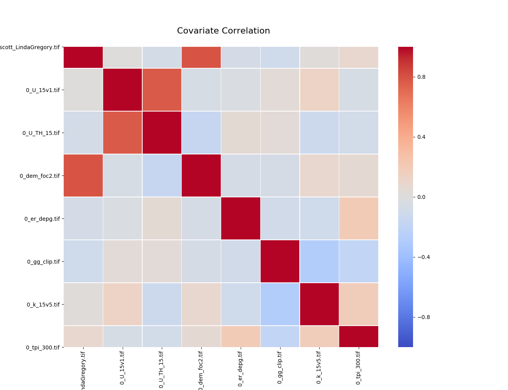
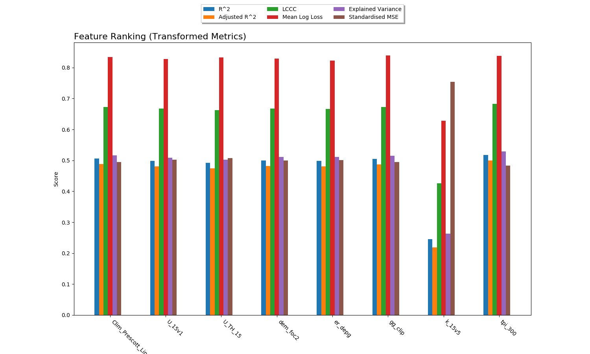
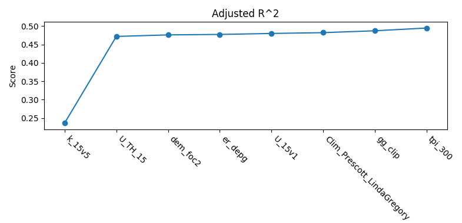
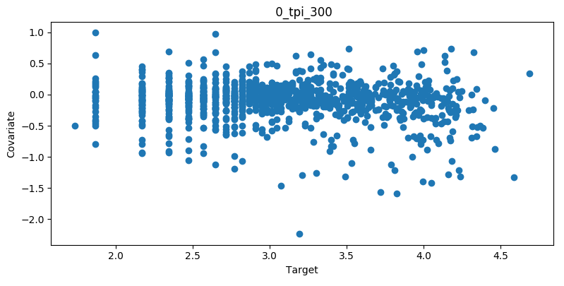
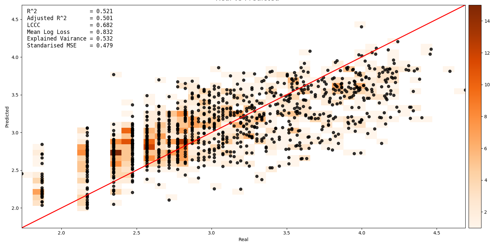
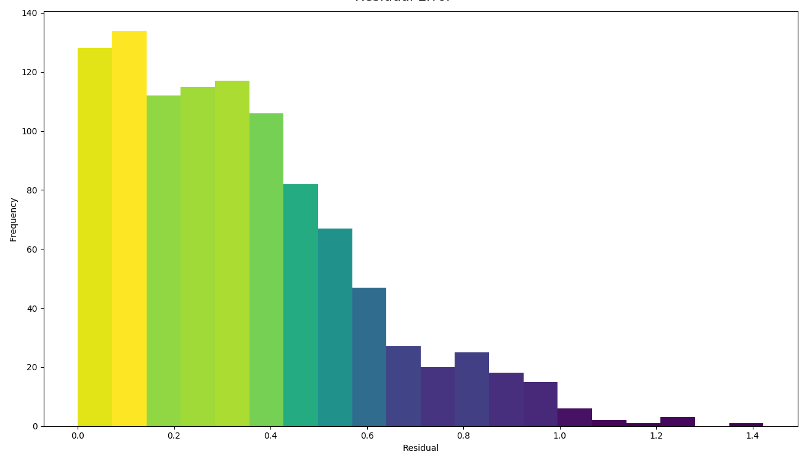
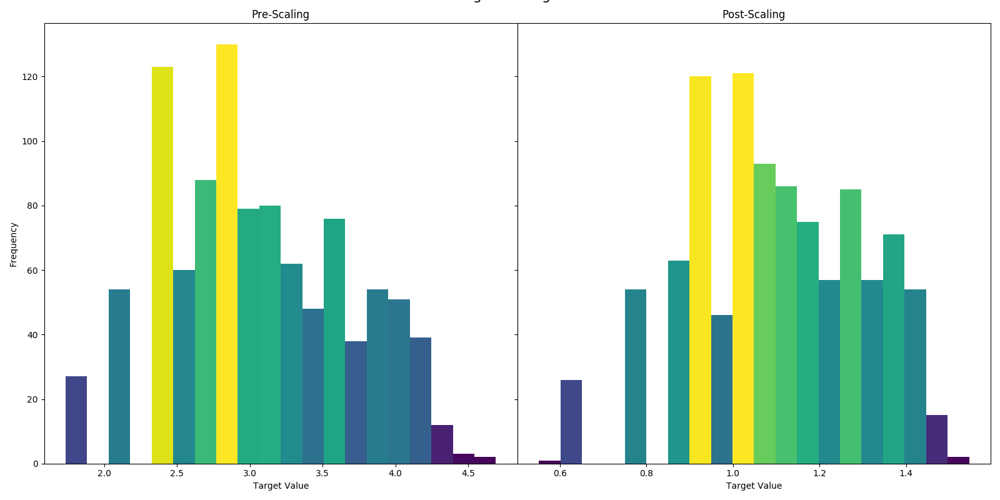

Usage¶
Running¶
UncoverML has three main commands. The learn command will train a new model based on the provided config:
uncoverml learn config.yaml
If performing K-Means clustering, the model is generated by running the cluster command:
uncoverml cluster config.yaml
After training a model, a prediction can be performed by running the predict command:
uncoverml predict config.yaml
To get you started, there are some demonstration config files located at uncover-ml/configs, which will allow the training of models on very small set of built-in example data.
For an in-depth explanation of config files, see Configuration.
Multiprocessing¶
UncoverML uses MPI for parallelization on localhosts and on clusters/high performance computers. Here is an example of running the pipeline from the command line,
$ mpirun -n 4 uncoverml learn -p 10 config.yaml
Breaking this down,
mpirun -n 4 instructs MPI to use four processors for the pipeline
uncoverml learn -p 10 config.yaml runs the learning pipeline (i.e. learns a machine learning model). The -p 10 flag makes 10 chunks of work for the four workers (this is to limit memory usage, more chunks, less memory usage), and the config.yaml is the configuration file for the pipeline.
Similarly, there are two more options,
$ mpirun -n 4 uncoverml predict -p 10 config.yaml
Which uses the learned model from the previous command to predict target values for all query points, and
$ mpirun -n 4 uncoverml cluster config.yaml
Which clusters (unsupervised) all of the data.
Running on HPC¶
In the scripts directory of the repository there are some example configs and an example
script, job_submit_example.sh, to assist launching batch jobs over multiple nodes with PBS.
UncoverML uses MPI for parallelization. To run an uncoverml command, use:
mpirun -n <number_of_processors> <command> -p <number_of_data_partitions>
Using more processors for a job will typically reduce the processing time. The -p option will partition data into the specified number of chunks. This is useful for dealing with larger-than-memory datasets. Try experimenting with this option if you experience out-of-memory errors.
Todo
Change below link to Gadi User Guide when it becomes available.
For more information on configuring PBS jobs on Raijin, view the NCI user documentation.
Configuration¶
UncoverML workflows are controlled by a YAML configuration file. This section provides some examples and explanations of different workflows and possible parameters.
For a reference to all possible config parameters, view the module
documentation: uncoverml.config.
In uncover-ml/configs directory, there some example YAML files to help you get started.
Learning¶
learning:
algorithm: multirandomforest
arguments:
n_estimators: 10
target_transform: log
forests: 20
The learning block specifies the algorithm or model to train. algorithm
is the name of the algorithm. arguments specifies a dictionary of
keyword arguments specific to that model. For reference about what
arguments are applicable, refer the documentation for the specific model.
Features¶
features:
- type: ordinal
files:
- directory: $UNCOVERML_SRC/tests/test_data/sirsam/covariates/
transforms:
- centre
- standardise
imputation: mean
The features block contains the features (AKA covariates) to be used for training and prediction.
UncoverML supports ordinal and categorical data, but they must be provided in separate
files and the type must be provided (if no type is provided, UncoverML will assume the
data is ordinal). To provide a separate feature set for categorical data, you can
add another entry under the features block:
features:
- type: ordinal
# ...files, transforms, imputation
- type: categorical
files:
- directory: path/to/categorical/data
# ...transforms, imputation
The files field is where paths to covariate data is specified. In this case, a directory
is provided, so every file in that directory will be treated as part of the feature set.
Individual paths can be set or a text file with multiple paths separated by commas:
features:
- type: ordinal
files:
- path: path/to/covariate1.tif
- path: path/to/covariate2.tif
- list: path/to/list_of_covariates.txt
Covariate files must be in geotiff format, and each file must have the same dimensions and projection.
transforms specifies scaling that will be applied to that set of features. Multiple can be
provided. Available transforms are:
centrelogsqrtstandardisewhitenonehotrandomhot
imputation is the imputation (filling of no data values) method. Only one can be provided for
each feature set. Available methods are:
nonemeangausnn(nearest neighbour)
Targets¶
targets:
file: $UNCOVERML_SRC/tests/test_data/sirsam/targets/geochem_sites_log.shp
property: Na_log
The targets block contains details for the training data. file is the path to the shapefile
containing the targets. property is the name of the field in the shapefile to train on. UncoverML
works by intersecting patches of the covariate data with corresponding target locations.
Validation¶
validation:
feature_rank: True
k-fold:
parallel: True
folds: 5
random_seed: 1
The validation block is optional and contains parameters for performing k-fold cross validation,
feature ranking and permutation importance. In this config file, feature_ranking has been
enabled and k-fold has also been enabled. k-fold cross validation has some parameters to set.
parellel will allow the cross validation to take advantage of multiprocessing: if you are running
UncoverML with MPI and more than one processor, setting this to True will accelerate the
validation. folds is the number of folds to split the training data into. random_seed is the
seed provided to numpy for getting random permutations of data to split into folds. The permutation
is pseudorandom, i.e. using the same seed will provide deterministic results.
Clustering¶
clustering:
# file: /path/to/class_labels.shp
# property: name_of_class_label_property
n_classes: 5
oversample_factor: 5
The clustering block is particular to the cluster command. When providing a clustering
block, learning, targets and validation blocks don’t apply and are not required.
Providing a clustering block and running the cluster will use the K-Means algorith to
cluster the covariates provided in the features block. By default, clustering is unsupervised.
If a shapefile containing points with class labels is provided as file, then semi-supervised
clustering will be performed.
Prediction¶
prediction:
quantiles: 0.95
outbands: 4
The prediction block configures the prediction output. quantiles refers to the prediction
interval, e.g. ‘0.95’ means that predicted values will fall within the lower and upper quantiles
95% of the time. outbands specifies the bands to output. Each band will be written as a separate
geotiff file. For classification, the available outbands is equivalent to the available classes.
For regression, the first outband is prediction and if the model provides them, the next are
variance, lower quantile and upper quantile. Some specific models provide further options - refer
the documentation for the specific model you are using. The outbands number is used as the RHS
of a slice, so providing ‘1’ for a regression will output prediction (0) and variance (1).
Todo
‘outbands’ is currently a bit broken. It gets used a slice for the output bands, so giving some arbitrarily high number will you give you all bands. This will change in future and the user will provide explicit labels for the bands they want.
Output¶
output:
directory: $UNCOVERML_SRC/tests/test_data/sirsam/random_forest/out
model: $UNCOVERML_SRC/tests/test_data/sirsam/random_forest/out/sirsam_Na_randomforest.model
plot_feature_ranks: True
plot_intersection: True
plot_real_vs_pred: True
plot_correlation: True
plot_target_scaling: True
The output block controls where outputs will be stored. directory is where all outputs from
learning, prediction and other commands will be stored. model is a special case, and specifies
where the ‘.model’ file created from the learn step will be stored and also what model will be
used in the prediction step. If you want to predict based on a previously learned model, you
need to change the model field to the path of the model you are using.
There are also various flags for generating plots. If these are set to True, then a plot will
be created. Some plots will only be created if certain steps have been run, e.g. plot_feature_ranks
will only generate a plot if feature ranking is performed as part of validation. For more details,
view the section on diagnostics: Diagnostics.
For a comprehensive list of the outputs each step of UncoverML generates, see the section on outputs: Outputs.
Pickling¶
pickling:
covariates: $UNCOVERML_SRC/tests/test_data/sirsam/random_forest/out/features.pk
targets: $UNCOVERML_SRC/tests/test_data/sirsam/random_forest/out/targets.pk
The final block is for pickling. During the learn step, covariates and targets are scaled and
intersected. Depending on the machine being used and the size of the data, this may take a
non-trivial amount of time. In situations where you are tweaking parameters and re-running the
learn step, pickling the intersected covariate and target data may save time. The covariates field
is the path to where the pickle file will be saved to and then read, and the targets file is the
same but for target data. If these are provied but do not exist, coviarates and targerts will be
scaled and intersected as normal then pickled to these files for future use. If provided and they
exist, intersection will be skipped and data will be loaded from these files instead.
Models¶
For an overview of all the models available in UncoverML, view the module
documentation: uncoverml.models.
Outputs¶
UncoverML produces a number of outputs. This section explains what they are.
Learn¶
rawcovariates.csv: a table containg the value from each covariate and the target value for a given point. This is before any scaling or transforms are applied.rawcovariates_mask.csv: a table representing the mask for each point, i.e. which coviarates are missing from which coordinates. Note: I think this is currently broken.transformed_targets.csv: a table containing untransformed target values in the first column and the transformed value in the other column.crossval_scores.json: a simple JSON dictionary containing the scores for each metric evaluated by cross-validation.crossval_results.csv: a table containing real target values in the first column and the corresponding prediction from cross-validation in the other column.featureranks.sjon: a JSON file containing the results of feature ranking. The ‘ranks’ dictionary contains covariates grouped by metric and ordered by performance (i.e. how much impact that covariate had on the model when removed) and ‘scores’ contains the corresponding numerical score.*.model: a Python binary file containing data related to the trained model. This does not need to be accessed directly but does need to be provided as part of thepredictstep.features.pkandtargts.pk: Python binary files containing preprocessed targets and covariates. These shouldn’t be accessed directly and are part of thepicklingblock of the configuration.
Predict¶
A number of maps as GeoTIFF files will be generated - there will be
one map for each band requested as output in the configuration file.
The map will be named after the band, e.g. prediction.tif for the
main prediction band. Downsampled versions of the maps will also be
generated for use as thumbnails.
Diagnostics¶
Covariate Correlation¶
This generates a correlation matrix showing correlation between provided covariates. The color/value of each square shows how strong the positive or negative correlation is:
To generate a correlation matrix, the learn command must be run
so that rawcovariates.csv is generated, and plot_correlation
must be set to True in the configuration.
Feature Ranking¶
The result of feature ranking can be plotted. This creates two plots. One is a grouped bar chart - each colored bar represents a metric, the Y-axis is the score of that metric and each group is a feature (AKA covariate):
The other plot is a series of curves. Each curve represents a metric, with scores on the Y-axis and covarites on the X-axis. Each inflection represents what happens to the score when the corresponding covariate is removed from the model:
To generate feature rank plots, the learn command must be run
with feature_rank set to True under the validation block
of the config, and plot_feature_ranks set to True.
Covariate Intersection¶
Covariate intersection can be plotted. These scatter plots, one for each covariate, show the corresponding covariate value for each target value:
To generate intersection plots, the learn command must be run
so that rawcovariates.csv is generated, and plot_intersection
must be True in the configuration.
Real vs. Prediction¶
A scatter plot showing the intersection between real vs. predicted values can be generated. This comapres the values predicted by the model to the actual target values, and is important for validating model. It includes several pieces of information. The points show the intersecting values. The 2D histogram in the background shows grouping of the points (the colorbar on the right-hand side codes the frequency of each grouping). The text in the upper-left shows the score from the metrics generated by cross-validation:
A histogram of residual error is also generated. This shows bins grouping the residual error between intersected points (i.e. the difference between a predicted value and the corresponding real value):
To generate a real vs. prediction plot, k-fold must be enabled
under the validation block of the config, and plot_real_vs_pred
must be set to True.
Target Scaling¶
A histogram of target scaling can be generated. This shows the distribution of the target data pre- and post-scaling:
To generate a target scaling histogram, run learn with plot_target_scaling
set to True.
Command Line Interface¶
UncoverML has several command line options. Select an option below to view its documentation:
Run the uncoverml pipeline for clustering, supervised learning and prediction. |
|
Subsample the targets from a shapefile to a new shapefile. |
|
Run the Gamma sensor prediction/super-resolution pipeline. |
|
|
|
Run the various machine learning parameter optimisation using scikit-learn GridSearchCv. |